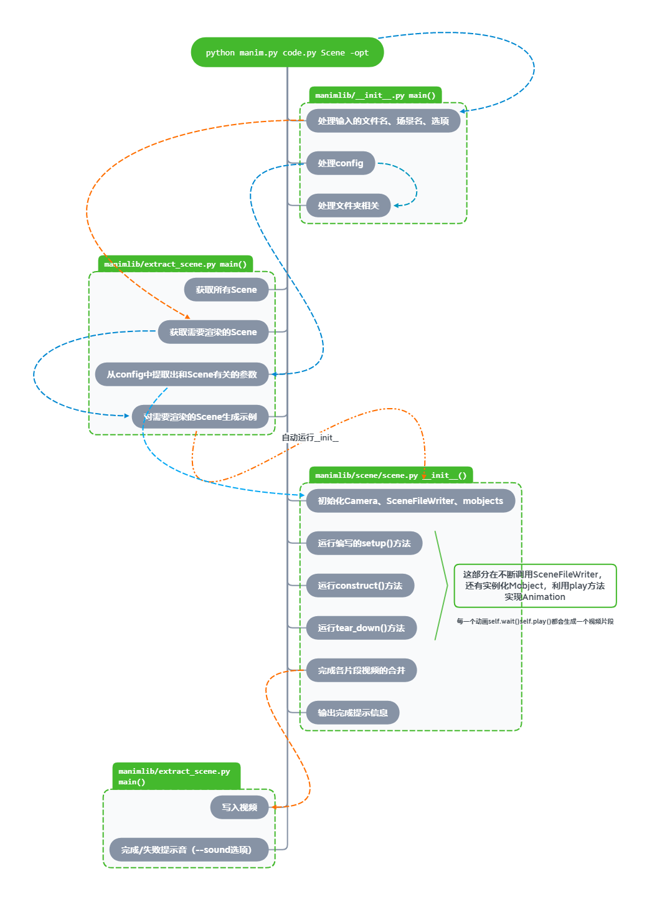

manim结构¶
manim目录结构¶
manim的目录看起来很复杂，文件很多，但是结构非常清晰
下面是manim的目录结构
├── manim.py # manim命令的入口
├── stage_scenes.py # 整理运行过的视频文件(一般没有用)
└── manimlib # manim库
├── __init__.py # 从这里运行
├── config.py # 在这里处理命令传入的参数
├── extract_scene.py # 提取、运行场景
├── imports.py # 将manimlib中的所有需要的文件都import进来
├── constants.py # 一些定义的常量
├── ctex_template.tex # 支持中文的tex模板(将使用xelatex编译)
├── tex_template.tex # tex模板(将使用latex编译，一般不使用)
├── stream_starter.py # 流模式的开始
├── container # 容器
│ └── container.py
├── scene # 场景
│ ├── scene_file_writer.py # 用于将scene写入视频文件
│ ├── scene.py # 最普通的场景
│ ├── three_d_scene.py # 三维场景
│ ├── graph_scene.py # 图像场景(带坐标轴)
│ ├── moving_camera_scene.py # 移动相机的场景
│ ├── reconfigurable_scene.py
│ ├── sample_space_scene.py # 概率相关的样本空间场景
│ ├── scene_from_video.py
│ ├── vector_space_scene.py # 向量场场景
│ └── zoomed_scene.py # 放大场景
├── animation # 动画相关
│ ├── animation.py # 动画的父类
│ ├── composition.py # 动画组
│ ├── creation.py # 和Create有关的动画
│ ├── fading.py # 和Fade有关的动画
│ ├── growing.py # 和Grow有关的动画
│ ├── indication.py # 一些用于强调的动画
│ ├── movement.py # 和移动有关的动画
│ ├── numbers.py # 实现对DecimalNumber数字的变化
│ ├── rotation.py # 和旋转有关的动画
│ ├── specialized.py # 一些针对特殊项目的不常用动画
│ ├── transform.py # 一些Transform变换
│ └── update.py # 从函数实现update
├── camera # 相机
│ ├── camera.py # 普通的相机
│ ├── mapping_camera.py # 含有映射效果的相机
│ ├── moving_camera.py # 可以移动的相机
│ ├── three_d_camera.py # 三维相机
│ └── multi_camera.py
├── files # 三个svg素材
│ ├── Bubbles_speech.svg
│ ├── Bubbles_thought.svg
│ └── PiCreatures_plain.svg
├── for_3b1b_videos # 3b1b视频中用到的场景
│ ├── common_scenes.py
│ ├── pi_class.py
│ ├── pi_creature_animations.py
│ ├── pi_creature.py
│ └── pi_creature_scene.py
├── mobject # (数学)物品
│ ├── mobject.py # 所有mobject的父类
│ ├── types # 三种子类mobject
│ │ ├── image_mobject.py # 插入图片
│ │ ├── point_cloud_mobject.py # PMobject(点集构成的mobject)
│ │ └── vectorized_mobject.py # VMobject(向量化的mobject)
│ ├── svg # 和svg有关的mobject
│ │ ├── svg_mobject.py # SVGMobject
│ │ ├── brace.py # 大括号
│ │ ├── drawings.py # svg图像的一些特殊mobject
│ │ ├── tex_mobject.py # 依赖LaTeX实现的文字
│ │ └── text_mobject.py # 不依赖LaTeX实现的文字
│ ├── coordinate_systems.py # 坐标系统
│ ├── frame.py # 和frame有关的mobject
│ ├── functions.py # 参数方程
│ ├── geometry.py # 几何图形的mobject
│ ├── matrix.py # 矩阵
│ ├── number_line.py # 数轴
│ ├── numbers.py # 可以变化的数字
│ ├── probability.py # 和概率有关的mobject
│ ├── shape_matchers.py # 适应其它物体大小的mobject
│ ├── three_dimensions.py # 三维物体
│ ├── three_d_shading_utils.py # 三维工具
│ ├── three_d_utils.py # 三维工具
│ ├── changing.py # 动态变化的mobject
│ ├── value_tracker.py # ValueTracker存储数的mobject
│ └── vector_field.py # 向量场
├── once_useful_constructs # 3b1b为某些视频写的常用场景
│ ├── arithmetic.py
│ ├── combinatorics.py
│ ├── complex_transformation_scene.py
│ ├── counting.py
│ ├── fractals.py
│ ├── graph_theory.py
│ ├── light.py
│ ├── matrix_multiplication.py
│ ├── NOTE.md
│ └── region.py
└── utils # 一些实用的工具函数
├── bezier.py # 贝塞尔曲线
├── color.py # 颜色
├── config_ops.py # 处理CONFIG
├── file_ops.py # 处理文件目录
├── images.py # 读取图片
├── iterables.py # 和列表字典处理有关的函数
├── paths.py # 路径
├── rate_functions.py # 一些定义的rate_function
├── simple_functions.py # 一些常用函数
├── sounds.py # 处理声音
├── space_ops.py # 空间坐标计算
├── strings.py # 处理字符串
└── tex_file_writing.py # 将字符串利用LaTeX写成svg
manim运行顺序¶
manim运行的主要顺序如上图所示